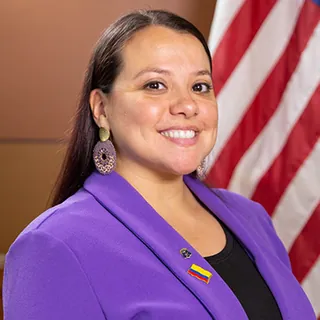
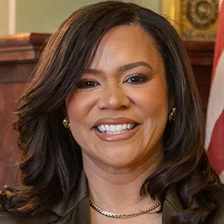
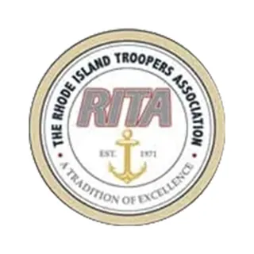
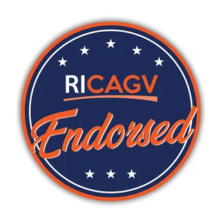

PrototypeSample design for the transition team's review.
Menu
Endorsements
Federal, State, and Local Leaders
Speaker Emerita Nancy PelosiAttorney General Peter NeronhaMayor Frank Picozzi, WarwickMayor Joseph Polisena Jr., JohnstonMayor Jeffrey Mutter, CumberlandFormer Congressman Patrick KennedyMayor Maria Rivera, Central FallsRepresentative Edith Ajello

Representative Karen AlzateCranston City Councilman Andy AndujarPawtucket School Committee Member Juan Pablo BarreraRepresentative Nathan BiahRepresentative Jennifer BoylanRepresentative Lauren CarsonRepresentative Julie CasimiroRepresentative Terri CortvriendRepresentative Gregory J. CostantinoRepresentative Grace DiazSenator Louis DiPalmaRepresentative Susan R. DonovanProvidence City Councilman Pedro EspinalSenator Meghan KallmanCentral Falls City Councilman Kevin KazarianRepresentative Rebecca KislakSenator Pamela LauriaSenator Tiara MackCentral Falls City Council-at-Large Laurilim Rosado MartinezPaula McFarland, Chair of the Cranston Tax Assessor’s Appeals BoardRepresentative Michelle McGawSenator Mark McKenneySenator Melissa MurrayPortsmouth Town Councilor Juan Carlos PayeroSenator Ryan PearsonCentral Falls City Councilman Rafael PegueroRepresentative Robert PhillipsRepresentative Brandon PotterSenator Ana QuezadaCentral Falls City Council President Pro Tempore Alberto Rivas-LugoEast Providence City Council President Robert RodericksRepresentative Scott SlaterCentral Falls City Councilman Anthony SolanoCentral Falls City Councilman Franklin SolanoProvidence School Board President Ty’Relle StephensRepresentative Jennifer A. StewartRepresentative Teresa TanziProvidence City Councilman James TaylorSenator Brian J. ThompsonSenator Linda UjifusaProvidence City Councilwoman Ana Vargas

Senator Lammis VargasSenator Sam Zurier
Democratic City and Town Committees
RI Association of Democratic City and Town Chairs
Barrington
Bristol
Burrillville
Central Falls
Cranston
Cumberland
Exeter
Jamestown
Johnston
Lincoln
Middletown
Narragansett
Newport
Portsmouth
Providence
Warren
Warwick
Woonsocket
Unions
International Union of Operating Engineers Local 57RI Brotherhood of Correctional OfficersUNITE HERE Local 26Rhode Island SEIU State Council

The Rhode Island Troopers AssociationNational Education Association Rhode Island (NEARI)United Nurses & Allied ProfessionalsRhode Island AFL-CIO
Organizations
Climate Action Rhode IslandProvidence Streets CoalitionItalian American DemocratsBoston Globe Editorial BoardRhode Island High School DemocratsHigh School Democrats of America

RI Coalition Against ViolenceEMILYs ListGIFFORDS PAC